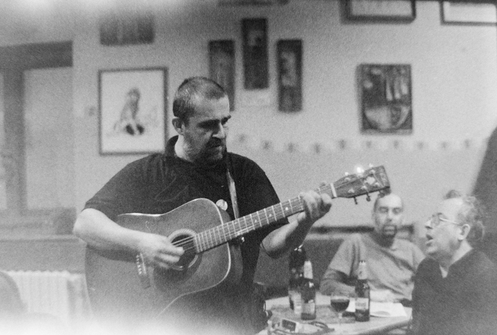
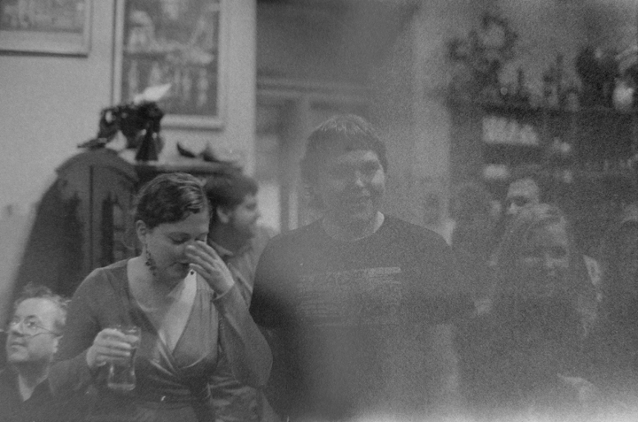
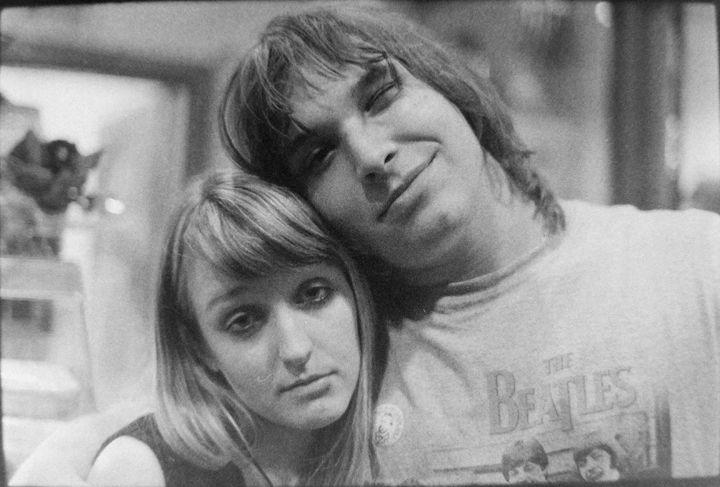

Wintrovky byly první akcí Tyláků, které jsem se účastnil. Nejdřív sem se trochu bál, abych mezi takhle uzavřenou skupinu zapadl. Pravda, že jsem tam měl dva kamarády Jirku a Honzu a kamarádku Zusku, ale to bylo minimum z početné "rodiny" činoherních umělců. Záhy po příchodu se však všechny moje obavy ukázaly jako naprosto neopodtatněné. Všichni se ke mě chovali vlídně a přátelsky, takže jsem si tam za chvíli připadal jako doma. Celý večer se hrálo na kytary a zpívalo. Jirka dokonce sehnal piva z maďarska, za které se nemuselo platit, takže o to to bylo ještě příjemnější. V průběhu večera se Zuzka opila, načež se ještě ztratila. V podnapilém stavu jsme kvůli ní uskutečnili záchranou akci na střechu divadla, kde ale nakonec stejně nebyla. Ke konci večera, což se mi doteď jeví jen v mlhavém oparu přátelské atmosféry, jsme s jednu naši kamarádku Terezu zabalili do toaletního papíru a udělali z ní mumii. Když nás nakonec "hlava" Tyláku Alča spatřila jak rozdováďěni putujeme s mumí napříč divadlem a my jí na otázku, jestli nevíme kdo rozházel totaleťák po celé budově odpověděli, že nemáme zdání, bylo zaděláno na problém.

I přes to, že je to fotka z poloviny večera, dávám ji jako první, protože přesně vystihuje tu krásnou a přátelskou atmosféru.

Celý večer se hrálo a zpívalo. Kdo chtěl, mohl si půjčit kytaru, nebo si rovnou sednout za piáno.

Když se všichni lehce přiopili, začalo se i tancovat.

A ještě jednou.

Nějaké fotky bouhužel nevyšli uplně dobře, protože jsem nedopatřením film částečně osvítil.

Zuzka ještě za plného vědomí.

Johnny a Zoly jsou ukázkové případy negativních účinků piva.

Při cestě z toalet jsem narazil na školníka z gymnázia, kam jsem chodil na střední. Až ten den jsem se dozvěděl, že v Tylu hraje už několik let.

Budoucí mumie Terka.

Další z osvícených fotek. Tentokrát ale výsledek vypadá povedeně.

Fotka Zuzky a Jirky. Tentokrát už oba lehce přiopilí.

Nevím už přesně, co mě na tom lustru zaujalo. Výsedek je ale rozhodně zajímavý.

Citrón a Zuzka. První komentář, co jsem k tété fotce dostal, byl, že citrón se tváří opravdu kysele.

V závěrečné fázi večera se zábava opravdu rozproudila. Tohle je moje nejoblíbenější fotka z celých Wintrovek. Výrazy Zuzky a Jirky jsou k nezaplacení.
A to je pro dnešek už všechno.